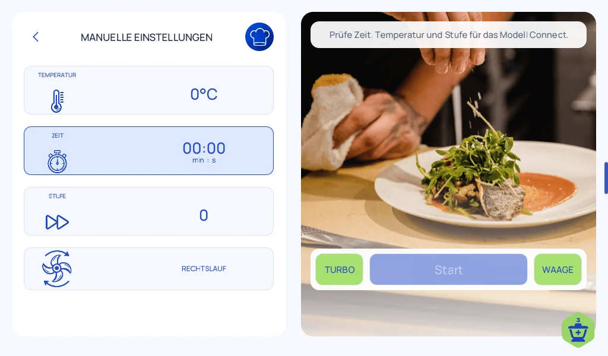
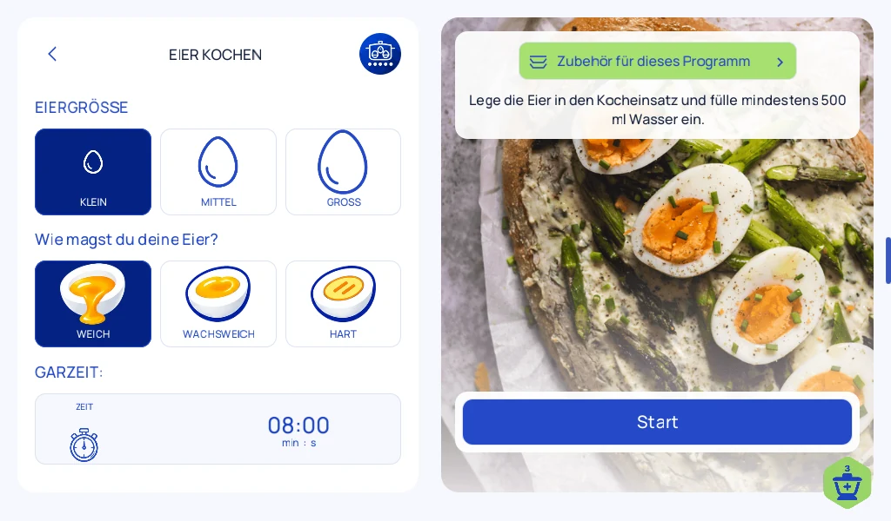
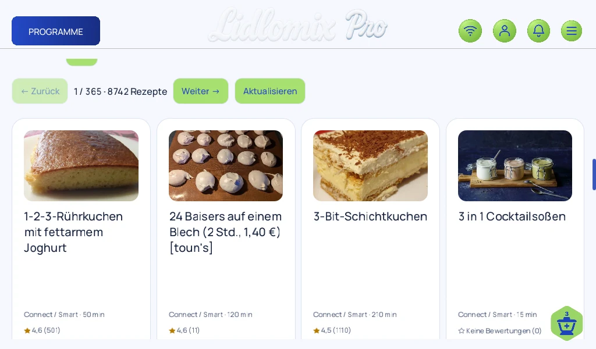
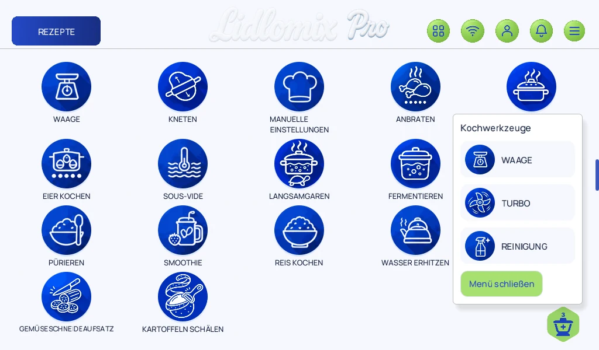

Monsieur Cuisine Connect
Einstellungen und Schnellzugriffe in 0.16.4
Seit Version 0.15.3 habe ich die Einstellung des Roboters auf dem Bildschirm geändert. Minuten und Sekunden scrollen separat, Temperatur und Geschwindigkeit bewegen sich zur Seite, und nachdem Sie alles eingestellt haben, drücken Sie einfach Start. Das Bild der Schüssel kann über den Bildschirm hinweg entwickelt werden, und von der Waage, Turbo und Washback bis zum gleichen Rezeptschritt.
Temperatur und Geschwindigkeit zur Seite bewegt
Der erste Editor hatte einen Smart-inspirierten Kreis. Nach den Proben habe ich die Grenze verdickt und den Berührungsbereich erweitert. Bei der Auswahl einer bestimmten Temperatur oder eines bestimmten Getriebes war das Niveau der Fingerbewegung bequemer. Der gewählte Wert ist groß und in der Mitte sichtbar, und an den Seiten können Sie die angrenzenden Einstellungen sehen. Wenn man sich nach links bewegt, erhöht man den Wert, nach rechts senkt man ihn. Ich habe die zusätzliche Liste unter dem Rad entfernt.

Zeit in zwei Spalten und einem Start
Berühren Sie das Zeitfeld und verschieben Sie dann die Minuten oder Sekunden separat nach oben oder unten. Die Verschiebung der einen Säule lässt die andere unverändert. Der physische Knopf reguliert die aktive Säule. In langen Programmen wie Fermentation zeigen Spalten Stunden und Minuten an. Änderungen an bearbeitbaren Feldern gelten sofort. Sie können von der Zeit auf die Temperatur gehen und Start ohne separate Genehmigungseinstellungen drücken.
In den manuellen Einstellungen zeigt der Bildschirm auf Stufe 10 ein Limit von 15 Minuten an. Auf dem Connect gilt es für die Stufen 7–10. Beim Heizen weist ein Hinweis auf die Höchststufe 3 hin. Das gilt auch für den Linkslauf. Soweit die Einstellungen es zulassen, lässt sich der manuelle Timer auf bis zu 99 Minuten und 99 Sekunden einstellen. Die Automatikprogramme haben eigene Bereiche.

Leserprogramme und Richtung des Umsatzes
Eine Berührung wechselt die Richtung. Wenn Sie nach rechts drehen, können Sie eine Klinge mit Pfeilen sehen, und wenn Sie nach links drehen, können Sie eine Klappe mit Pfeilen sehen. Ich habe etwa ein Drittel der Parameter und Varianten des Teigs hinzugefügt. Harte, weiche und flüssige Kuchen haben ihre eigene Grafik. Der Programm-Header zeigt ein kleines Symbol aus dem Menü.
Beim Kochen von Eiern erweiterte ich die Beschreibungen von Größe, Kochgrad und Zeit. In jeder Zeile ist ein blaues Feld aktiv, die anderen haben einen weißen Hintergrund. Beim Dampfkochen hat die Heat-Option vor dem Zählen eine größere Fläche und einen Abstand von Start und Stop. Ein ähnliches Intervall wird durch die Annahme einer Vorspeise und Abdeckung für das Schneiden von Gemüse bestätigt.

Volles Bild von Geschirr und kürzeren Fliesen
Berühren Sie in einem offenen Rezept den Fotogurt zweimal, um das gesamte Bild im Verhältnis zu sehen. Eine Berührung schließt die Vorschau und kehrt zum Rezept zurück. Die Geste funktioniert im Offline-Katalog Monsieur Cuisine und im Recipes Adapted Pro. Im Pro-Verzeichnis reserviert die Karte drei Zeilen für den Titel, und der vollständige Name ist beim Öffnen sichtbar.

Turbo, Weight und Wash als volle Programme
Turbo und Gewicht sind neben Start in Ihren eigenen Einstellungen. Sie können auch eine Wäsche aus dem Floating-Menü öffnen. Jede Verknüpfung zeigt den gleichen Vollbildbildschirm als separates Programm an. Zurück zum Rezept stellt den aktuellen Schritt wieder her und Zurück zum Programm behält die voreingestellten Parameter bei. Um Turbo zu verwenden, müssen Sie die Taste auf dem Programmbildschirm halten.



Alle Releases nach 0.15.3
- 0.15.4 — Der Ring des physischen Knopfes wird gelöscht, wenn Connect in den Schlaf versetzt wird, und entzündet sich, wenn er aufwacht.
- 0.15.5 - Schalten Sie sich mit einer Berührung und einer separaten Wahl der Zeiteinheit, um den Knopf einzustellen. In dieser Werkreihe gab es auch größere Icons, Varianten von Kuchen und Eiern, klarere Beschreibungen und größere Optionsfelder für Dampf und Vorspeisen.
- 0.15.6 — Vollbildvorschau eines Rezeptfotos in beiden Katalogen.
- 0.15.7 — niedrigere Kacheln in den Pro Adapted Recipes, mit drei Zeilen pro Titel.
- 0.15.8 — Rundzeitfelder mit Einheitenauswahl und + und -Tasten.
- 0.15.9 — ein separater großer Zeit-Editor mit einem Rand rechts und einer Wahl der Einheit.
- 0.16.0 — Erweiterte benutzerdefinierte Einstellungen bis zu 99 min und 99 sec, zentrierte Min- und sec-Tasten und Unterstützung dieses Bereichs im Connect-Modul.
- 0.16.1 - mehr als doppelt so groß wie der Umfang eines großen Editors und ein breiterer Bereich, der auf einen kurzen Widerstand reagiert.
- 0.16.2 — Vertikale Zeitspalten, Instant-Einstellungen, Start unter Editor, Limit-Nachrichten und Turbo-Shortcuts und Gewicht in eigenen Einstellungen.
- 0.16.3 — horizontale Temperatur- und Geschwindigkeitswähler, große Ziffern und Entfernen der zusätzlichen Einrichtungsliste.
- 0.16.4 — Volle Bildschirme von Abkürzungswerkzeugen und Rückkehr zum gleichen Programm- oder Rezeptschritt.
Tests auf Connect
Am Gerät habe ich beide Zeitspalten, das Limit von 15:00 auf Stufe 10, den Heizhinweis, die horizontalen Regler und die Rückkehr aus den Schnellwerkzeugen geprüft. Am Testgerät habe ich auch eine bei 0 g stehengebliebene Waagenanzeige untersucht. Das ältere Connect-Modul und das Trennen der Stromversorgung stellten die Reaktion auf einen 1-kg-Beutel nicht wieder her. Die Ursache ist weiterhin unbestätigt.